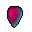
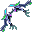
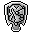
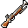
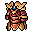
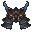

Forsaken City 1–3
nível 31+ recomendado- Portal
- Shaitan 1509, 3666
- Abre
- a cada 2 h, 1 h aberto
- Bosses
- Death Knight (45)
Portais abrem por horário (relógio do seu PC). Nenhuma dungeon exige grupo e, por enquanto, nenhuma tem limite de nível: a faixa de cada card é a recomendada.
| Dungeon | Para entrar | Para descer de andar |
|---|---|---|
| Forsaken City | Sem limite de nível (recomendado 31+) | Andares 2 e 3: matar todos os mini-bosses do andar |
| Dark Swamp | Sem limite de nível (recomendado 48+) | — |
| Demonic World | Sem limite de nível (recomendado 48+) | Andar 2: matar o Wandering Soul |
| Chaos Argent | Sem grupo, com a Medal of Valor | — |
| Mirages (Icicle, Thundoria e Shaitan) | Reality Mask (gasta 1) e 10 de reputação (gasta) | — |
| Hell (Abaddon) | Pelo portal dentro do Pirate Hideout | Os andares seguintes abrem a partir do anterior |
A Reality Mask cai da Medusa (nível 75). Reputação vem de missões e de ter discípulos.
Missão "Capture the fearsome Wang Xiao Hu" com o Captain Haagen Dazs 407, 538.
Precisa da Medal of Valor: Arena Administrator em Argent 2210, 2893, 50 mil, nível 25+. Entrar sem grupo.
Lair 2 pede Timeless Machine (Huge Cyborg), Sigil of Anubis (Anubis) e Mask of Mummy King (Dharma Pharaoh).
Os baús dos chefes da Forsaken City, do Dark Swamp e do Demonic World dão um item sorteado: os selados da faixa (deslacre com o Corwin em Argent) e, neste servidor, também o equipamento comum da faixa (Leather, Tiger Hide e Warrior; escudos; tatuagens do Champion) e os Ultimate Chest 35, 45 e 55. Passo a passo do Chaos Argent em Chaos Argent.
Mini-bosses de mapa aberto (Behemoth, Atrocious Yeti King, Captain Fickle, Jack - Black Sail…) estão com 60% do HP e pagam 15× o gold normal.
Tudo tirado dos arquivos do servidor. Em cada andar: o nível do grosso dos monstros, o ataque que você precisa para matar o monstro mais comum em ~30 golpes básicos e o HP para aguentar o golpe mais forte. Os três números estão na janela de status (Alt+A). Se os três batem, está pronto; se só o HP falta, vá com mais poções; se o ataque falta, a dungeon vai ser lenta demais (o dano cai rápido com a DEF dos monstros).
Dano = ataque × (1 − RF do alvo) − DEF do alvo, ±2,5% por nível de diferença (até ±20%). Monstros elite têm cerca do dobro do HP e +30 de DEF de um comum do mesmo nível.
Como chegar: Portal em Magical Ocean (1509, 3666). Abre a cada 2 h (relógio do seu PC, contando de 2h/15h), fica 60 min aberto e o mapa fecha 120 min depois de abrir: quem está dentro volta para fora.
Andares: Para descer do andar 1 ao 2 e do 2 ao 3 é preciso matar todos os mini-bosses do andar (os 4 Captains no 1).
Magical Ocean (1420, 2973)) em 11 golpes ou menos, lutando do jeito de sempre, o seu ataque basta (vale também para quem depende de skill: o teste e a dungeon escalam igual).253 × (1 − sua RF) − sua DEF.| Monstro | Nv | Tipo | HP | Ataque | DEF | RF | Qtd | Renasce | Gold |
|---|---|---|---|---|---|---|---|---|---|
| Sorrow Warrior | 31 | Elite | 2.074 | 154–232 | 103 | 19 | 89 | 30 min | 1.421 |
| Sorrow Archer | 32 | Elite | 2.112 | 110–166 | 106 | 20 | 82 | 30 min | 1.488 |
| Wailing Warrior | 33 | Elite | 2.131 | 169–253 | 109 | 20 | 89 | 30 min | 1.557 |
| Wailing Archer | 34 | Elite | 2.160 | 134–202 | 112 | 21 | 94 | 30 min | 1.626 |
| Sorrow Captain | 38 | Mini-boss | 5.400 | 239–359 | 124 | 23 | 1 | 30 min | 14.355 |
| Sorrow Archer Captain | 38 | Mini-boss | 5.400 | 239–359 | 124 | 23 | 1 | 30 min | 14.355 |
| Wailing Captain | 40 | Mini-boss | 7.200 | 264–396 | 130 | 24 | 1 | 30 min | 15.479 |
| Wailing Archer Captain | 40 | Mini-boss | 7.200 | 264–396 | 130 | 24 | 1 | 30 min | 15.479 |
Vale a pena:  Broken Gem of Rage ·
Broken Gem of Rage ·  Broken Gem of Soul ·
Broken Gem of Soul ·  Broken Gem of Colossus ·
Broken Gem of Colossus ·  Broken Gem of the Wind ·
Broken Gem of the Wind ·  Broken Gem of Striking ·
Broken Gem of Striking ·  Refining Gem
Refining Gem
Ascaron (755, 2941)) em 12 golpes ou menos, lutando do jeito de sempre, o seu ataque basta (vale também para quem depende de skill: o teste e a dungeon escalam igual).566 × (1 − sua RF) − sua DEF.| Monstro | Nv | Tipo | HP | Ataque | DEF | RF | Qtd | Renasce | Gold |
|---|---|---|---|---|---|---|---|---|---|
| Elite Wailing Warrior | 37 | Comum | 4.454 | 329–494 | 121 | 23 | 185 | 2 min | 920 |
| Wailing Marksman | 39 | Comum | 4.550 | 355–532 | 120 | 24 | 240 | 2 min | 994 |
| Cursed Mummy | 40 | Comum | 6.026 | 377–566 | 130 | 24 | 21 | 2 min | 1.032 |
Ascaron (755, 2941)) em 12 golpes ou menos, lutando do jeito de sempre, o seu ataque basta (vale também para quem depende de skill: o teste e a dungeon escalam igual).566 × (1 − sua RF) − sua DEF.| Monstro | Nv | Tipo | HP | Ataque | DEF | RF | Qtd | Renasce | Gold |
|---|---|---|---|---|---|---|---|---|---|
| Wailing Marksman | 39 | Comum | 4.550 | 355–532 | 120 | 24 | 186 | 2 min | 994 |
| Cursed Mummy | 40 | Comum | 6.026 | 377–566 | 130 | 24 | 74 | 2 min | 1.032 |
| Crazy Mummy | 42 | Elite | 5.580 | 242–364 | 136 | 26 | 120 | 2 min | 2.218 |
| Death Knight | 45 | Boss | 140.000 | 224–336 | 156 | 40 | 1 | 2 h | 98.198 |
Vale a pena:  Gem of the Wind ·
Gem of the Wind ·  Gem of Striking ·
Gem of Striking ·  Gem of Colossus ·
Gem of Colossus ·  Gem of Rage ·
Gem of Rage ·  Gem of Soul ·
Gem of Soul ·  Refining Gem
Refining Gem
Como chegar: Portal em Magical Ocean (2037, 2779). Abre a cada 2 h (relógio do seu PC, contando de 2h/15h), fica 60 min aberto e o mapa fecha 120 min depois de abrir: quem está dentro volta para fora.
Ascaron (828, 1923)) em 7 golpes ou menos, lutando do jeito de sempre, o seu ataque basta (vale também para quem depende de skill: o teste e a dungeon escalam igual).672 × (1 − sua RF) − sua DEF.| Monstro | Nv | Tipo | HP | Ataque | DEF | RF | Qtd | Renasce | Gold |
|---|---|---|---|---|---|---|---|---|---|
| Swamp Bog | 40 | Comum | 6.026 | 377–566 | 130 | 24 | 101 | 1 min | 1.032 |
| Swamp Watcher | 45 | Comum | 10.000 | 448–672 | 120 | 27 | 203 | 1 min | 1.227 |
| Master Swamp Bog | 45 | Mini-boss | 15.000 | 314–470 | 145 | 27 | 1 | 3 h | 18.412 |
| Huge Mud Monster | 50 | Boss | 210.000 | 320–480 | 214 | 40 | 1 | 2 h | 114.737 |
| Swamp Man | 50 | Elite | 7.840 | 319–479 | 160 | 30 | 437 | 1 min | 2.868 |
| Master Swamp Watcher | 50 | Mini-boss | 24.000 | 372–559 | 120 | 30 | 1 | 3 h | 21.513 |
| Jungle Guardian | 51 | Mini-boss | 10.056 | 384–576 | 163 | 31 | 2 | 2 min | 22.153 |
| Swamp Warden | 55 | Elite | 8.600 | 370–554 | 175 | 33 | 204 | 2 min | 3.303 |
| Swamp Champion | 55 | Mini-boss | 30.000 | 431–647 | 175 | 33 | 1 | 3 h | 24.773 |
Vale a pena:  Gem of the Wind ·
Gem of the Wind ·  Gem of Striking ·
Gem of Striking ·  Gem of Colossus ·
Gem of Colossus ·  Gem of Rage ·
Gem of Rage ·  Gem of Soul ·
Gem of Soul ·  Refining Gem
Refining Gem
Como chegar: Portal em Ascaron (910, 1069). Abre a cada 2 h (relógio do seu PC, contando de 2h/15h), fica 40 min aberto e o mapa fecha 120 min depois de abrir: quem está dentro volta para fora.
Andares: Para descer ao andar 2 é preciso matar o Wandering Soul (boss do andar 1).
Ascaron (828, 1923)) em 7 golpes ou menos, lutando do jeito de sempre, o seu ataque basta (vale também para quem depende de skill: o teste e a dungeon escalam igual).974 × (1 − sua RF) − sua DEF.| Monstro | Nv | Tipo | HP | Ataque | DEF | RF | Qtd | Renasce | Gold |
|---|---|---|---|---|---|---|---|---|---|
| Imaginary Snow Doll | 50 | Elite | 7.840 | 319–479 | 160 | 30 | 515 | 2 min | 2.868 |
| Snow Doll Spirit | 55 | Elite | 8.600 | 370–554 | 175 | 33 | 281 | 2 min | 3.303 |
| Wandering Soul | 55 | Boss | 560.000 | 384–576 | 234 | 45 | 1 | 3 h | 132.125 |
| Evil Snow Doll Spirit | 57 | Comum | 18.280 | 649–974 | 181 | 35 | 80 | 2 min | 1.741 |
Vale a pena:  Gem of the Wind ·
Gem of the Wind ·  Gem of Striking ·
Gem of Striking ·  Gem of Colossus ·
Gem of Colossus ·  Gem of Rage ·
Gem of Rage ·  Gem of Soul ·
Gem of Soul ·  Refining Gem
Refining Gem
Ascaron (522, 2132)) em 7 golpes ou menos, lutando do jeito de sempre, o seu ataque basta (vale também para quem depende de skill: o teste e a dungeon escalam igual).1214 × (1 − sua RF) − sua DEF.| Monstro | Nv | Tipo | HP | Ataque | DEF | RF | Qtd | Renasce | Gold |
|---|---|---|---|---|---|---|---|---|---|
| Confused Snow Doll | 59 | Comum | 18.440 | 686–1029 | 187 | 36 | 477 | 2 min | 1.833 |
| Demonic Snowman | 61 | Elite | 11.088 | 439–658 | 193 | 37 | 274 | 2 min | 3.851 |
| Snowman Warlord | 65 | Boss | 700.000 | 448–672 | 274 | 53 | 1 | 2 h | 169.295 |
| Demonic Yeti | 65 | Comum | 22.528 | 809–1214 | 205 | 39 | 80 | 2 min | 2.116 |
Vale a pena:  Gem of the Wind ·
Gem of the Wind ·  Gem of Striking ·
Gem of Striking ·  Gem of Colossus ·
Gem of Colossus ·  Gem of Rage ·
Gem of Rage ·  Gem of Soul ·
Gem of Soul ·  Refining Gem
Refining Gem
Como chegar: Portal em Deep Blue (1370, 532). Abre a cada 2 h (relógio do seu PC, contando de 2h/15h), fica 30 min aberto e o mapa fecha 45 min depois de abrir: quem está dentro volta para fora.
Ascaron (412, 2334)) em 5 golpes ou menos, lutando do jeito de sempre, o seu ataque basta (vale também para quem depende de skill: o teste e a dungeon escalam igual).3000 × (1 − sua RF) − sua DEF.| Monstro | Nv | Tipo | HP | Ataque | DEF | RF | Qtd | Renasce | Gold |
|---|---|---|---|---|---|---|---|---|---|
| Lance Newbie Phantom | 10 | Comum | 300 | 40–60 | 30 | 6 | 8 | 1 min | 146 |
| Carsise Newbie Phantom | 10 | Comum | 500 | 32–48 | 50 | 8 | 4 | 1 min | 146 |
| Phyllis Newbie Phantom | 10 | Comum | 200 | 28–42 | 20 | 5 | 6 | 1 min | 146 |
| Ami Newbie Phantom | 10 | Comum | 200 | 28–42 | 20 | 5 | 5 | 1 min | 146 |
| Ami Cleric Phantom | 41 | Comum | 2.500 | 280–420 | 60 | 15 | 9 | 1 min | 1.070 |
| Lance Hunter Phantom | 50 | Comum | 2.700 | 320–480 | 50 | 20 | 12 | 1 min | 1.434 |
| Carsise Swordsman Phantom | 51 | Comum | 4.000 | 301–452 | 100 | 40 | 11 | 1 min | 1.477 |
| Phyllis Explorer Phantom | 51 | Comum | 2.500 | 280–420 | 60 | 19 | 9 | 1 min | 1.477 |
| Lance Voyager Phantom | 70 | Comum | 20.000 | 1360–2040 | 180 | 28 | 14 | 1 min | 2.363 |
| Black Dragon Lance | 75 | Boss | 280.000 | 256–384 | 200 | 40 | 37 | 1 min | 209.446 |
| Black Dragon Carsise | 75 | Boss | 350.000 | 480–720 | 250 | 50 | 30 | 1 min | 209.446 |
| Black Dragon Phyllis | 75 | Boss | 280.000 | 384–576 | 150 | 30 | 53 | 1 min | 209.446 |
| Black Dragon Ami | 75 | Boss | 280.000 | 384–576 | 150 | 30 | 47 | 1 min | 209.446 |
| Lance Crusader Phantom | 80 | Comum | 20.000 | 1520–2280 | 250 | 35 | 10 | 1 min | 2.882 |
| Carsise Champion Phantom | 80 | Comum | 50.000 | 2000–3000 | 400 | 40 | 15 | 1 min | 2.882 |
| Ami Seal Master Phantom | 80 | Comum | 30.000 | 1840–2760 | 200 | 22 | 16 | 1 min | 2.882 |
| Phyllis Sharpshooter Phantom | 81 | Comum | 20.000 | 469–704 | 169 | 20 | 6 | 1 min | 2.936 |
| Phyllis Cleric Phantom | 82 | Comum | 20.000 | 479–718 | 205 | 20 | 13 | 1 min | 2.990 |
Vale a pena:  Heart of Black Dragon ·
Heart of Black Dragon ·  Eye of Black Dragon ·
Eye of Black Dragon ·  Gem of Colossus ·
Gem of Colossus ·  Gem of Rage
Gem of Rage
Como chegar: Mapa aberto, sem horário: pelo Abandon Mine Haven (teleporte das cidades).
Ascaron (522, 2132)) em 11 golpes ou menos, lutando do jeito de sempre, o seu ataque basta (vale também para quem depende de skill: o teste e a dungeon escalam igual).1501 × (1 − sua RF) − sua DEF.| Monstro | Nv | Tipo | HP | Ataque | DEF | RF | Qtd | Renasce | Gold |
|---|---|---|---|---|---|---|---|---|---|
| Bandit | 25 | Comum | 900 | 94–141 | 80 | 15 | 13 | 10 s | 520 |
| Vampire Bat | 31 | Comum | 810 | 108–162 | 55 | 8 | 36 | 10 s | 710 |
| Miner Mole | 35 | Comum | 780 | 152–229 | 50 | 14 | 36 | 10 s | 848 |
| Mud Monster | 36 | Comum | 1.380 | 158–237 | 100 | 15 | 44 | 10 s | 884 |
| Ninja Mole | 38 | Comum | 600 | 116–174 | 40 | 12 | 49 | 10 s | 957 |
| Behemoth | 40 | Mini-boss | 13.559 | 132–198 | 87 | 20 | 2 | 1 h | 15.479 |
| Pumpkin Knight | 46 | Comum | 2.800 | 231–346 | 45 | 20 | 46 | 1 h | 1.268 |
| Long Hair Crab | 62 | Comum | 15.235 | 460–690 | 177 | 27 | 42 | 1 min | 1.973 |
| Baby Icy Dragon | 65 | Elite | 17.816 | 338–508 | 100 | 26 | 59 | 1 min | 4.232 |
| Zombie (Pong) | 65 | Comum | 12.632 | 671–1006 | 137 | 26 | 23 | 1 min | 2.116 |
| Zombie (Gang) | 67 | Comum | 14.654 | 584–876 | 140 | 27 | 38 | 1 min | 2.214 |
| Cursed Water Fairy | 68 | Comum | 10.540 | 514–771 | 205 | 37 | 132 | 1 min | 2.263 |
| Zombie (Hu) | 70 | Comum | 16.096 | 544–816 | 147 | 28 | 66 | 1 min | 2.363 |
| Icy Dragon | 75 | Boss | 42.000 | 800–1200 | 314 | 61 | 1 | 1 h | 209.446 |
| Ancient Mystic Shrub | 110 | Comum | 12.550 | 1000–1501 | 227 | 35 | 1 | 1 h | 4.635 |
Vale a pena:  
Como chegar: Mapa aberto, sem horário: teleporte "Lone Tower Entrance".
Ascaron (412, 2334)) em 19 golpes ou menos, lutando do jeito de sempre, o seu ataque basta (vale também para quem depende de skill: o teste e a dungeon escalam igual).986 × (1 − sua RF) − sua DEF.| Monstro | Nv | Tipo | HP | Ataque | DEF | RF | Qtd | Renasce | Gold |
|---|---|---|---|---|---|---|---|---|---|
| Mad Tribal Witchdoctor | 69 | Comum | 5.654 | 355–532 | 130 | 25 | 12 | 30 s | 2.313 |
| Frenzied Lizardman | 69 | Comum | 4.523 | 533–800 | 116 | 25 | 11 | 30 s | 2.313 |
| Nimble Forest Hunter | 69 | Comum | 5.654 | 355–532 | 130 | 25 | 11 | 30 s | 2.313 |
| Feral White Bobcat | 70 | Comum | 6.096 | 460–690 | 147 | 28 | 9 | 30 s | 2.363 |
| Nimble Shadow Hunter | 71 | Comum | 6.072 | 376–564 | 134 | 26 | 15 | 30 s | 2.413 |
| Terra Soldier Leader | 71 | Comum | 4.857 | 564–846 | 119 | 26 | 15 | 30 s | 2.413 |
| Elite Terra Warrior | 72 | Comum | 4.838 | 576–865 | 120 | 26 | 15 | 30 s | 2.464 |
| Elite Shadow Hunter | 73 | Comum | 4.800 | 492–738 | 122 | 29 | 16 | 30 s | 2.515 |
| Vicious Grassland Elder | 73 | Comum | 5.400 | 540–811 | 137 | 28 | 26 | 30 s | 2.515 |
| Terra Artificer Leader | 73 | Comum | 6.000 | 492–738 | 153 | 29 | 26 | 30 s | 2.515 |
| Feral White Bobcat | 74 | Comum | 4.780 | 503–754 | 124 | 30 | 26 | 30 s | 2.566 |
| Black Bobcat | 75 | Comum | 6.000 | 514–771 | 157 | 27 | 15 | 30 s | 2.618 |
| Feral Black Bobcat | 75 | Comum | 4.800 | 514–771 | 125 | 30 | 25 | 30 s | 2.618 |
| Evil Guardian Angel | 75 | Comum | 5.400 | 565–848 | 141 | 29 | 24 | 30 s | 2.618 |
| Cursed White Bobcat | 76 | Comum | 6.000 | 525–788 | 159 | 31 | 24 | 30 s | 2.670 |
| Ruthless Forest Hunter | 77 | Comum | 6.024 | 428–643 | 161 | 31 | 35 | 40 s | 2.723 |
| Cursed Black Bobcat | 77 | Comum | 4.819 | 536–805 | 128 | 31 | 29 | 40 s | 2.723 |
| Ruthless Shadow Hunter | 78 | Comum | 4.819 | 657–986 | 130 | 28 | 31 | 40 s | 2.776 |
| Relic Protector | 80 | Comum | 13.000 | 576–864 | 350 | 35 | 3 | 40 s | 2.882 |
Como chegar: De barco, pelo mar de Shaitan (sem horário).
Ascaron (412, 2334)) em 7 golpes ou menos, lutando do jeito de sempre, o seu ataque basta (vale também para quem depende de skill: o teste e a dungeon escalam igual).3060 × (1 − sua RF) − sua DEF.| Monstro | Nv | Tipo | HP | Ataque | DEF | RF | Qtd | Renasce | Gold |
|---|---|---|---|---|---|---|---|---|---|
| Sorceror Ship | 10 | Comum | 10 | 16–20 | 6 | 10 | 7 | 1 min | 146 |
| Cerebus | 45 | Mini-boss | 18.000 | 157–235 | 50 | 18 | 1 | 24 h | 18.412 |
| Skeletar Pirate Ship | 60 | Elite | 10.000 | 480–720 | 0 | 30 | 56 | 1 min | 3.758 |
| Spirit Ship | 60 | Comum | 10.000 | 440–660 | 0 | 25 | 68 | 2 min | 1.879 |
| Deathsoul Turret | 70 | Comum | 20.000 | 800–1200 | 0 | 25 | 37 | 2 min | 2.363 |
| Deathsoul Soldier | 70 | Comum | 20.000 | 1800–2700 | 180 | 28 | 103 | 1 min | 2.363 |
| Deathsoul Gunboat | 70 | Elite | 12.500 | 576–864 | 0 | 30 | 51 | 1 min | 4.725 |
| Deathsoul Speed Boat | 70 | Comum | 18.000 | 640–960 | 0 | 25 | 23 | 2 min | 2.363 |
| Hell Skeleton A | 70 | Comum | 20.000 | 1360–2040 | 180 | 28 | 37 | 2 min | 2.363 |
| Hell Skeleton B | 70 | Comum | 20.000 | 1360–2040 | 180 | 28 | 31 | 1 min | 2.363 |
| Hell Mummy A | 70 | Elite | 15.000 | 1104–1656 | 220 | 35 | 30 | 1 min | 4.725 |
| Hell Mummy B | 70 | Elite | 15.000 | 1104–1656 | 220 | 35 | 20 | 1 min | 4.725 |
| Skeletar Pirate - Lala | 75 | Comum | 15.000 | 1680–2520 | 180 | 28 | 96 | 1 min | 2.618 |
| Auto Defense Weapon | 75 | Comum | 15.000 | 1360–2040 | 180 | 33 | 21 | 2 min | 2.618 |
| Skeletar Pirate - Kaka | 75 | Comum | 20.000 | 2000–3000 | 200 | 30 | 131 | 1 min | 2.618 |
| Black Jewel | 75 | Boss | 525.000 | 480–720 | 0 | 40 | 1 | 2 h | 209.446 |
| Deathsoul Officer | 75 | Comum | 25.000 | 2040–3060 | 250 | 30 | 125 | 1 min | 2.618 |
| Hell Corpse A | 75 | Elite | 20.000 | 1344–2016 | 200 | 20 | 31 | 1 min | 5.236 |
| Hell Corpse B | 75 | Elite | 20.000 | 1344–2016 | 200 | 20 | 30 | 1 min | 5.236 |
| Deathsoul Guard | 80 | Comum | 30.000 | 1840–2760 | 200 | 35 | 72 | 1 min | 2.882 |
| Skeletar Pirate - Tutu | 80 | Comum | 20.000 | 1520–2280 | 250 | 35 | 106 | 1 min | 2.882 |
| Hell Pharaoh A | 80 | Comum | 50.000 | 2000–3000 | 280 | 35 | 12 | 1 min | 2.882 |
| Hell Pharaoh B | 80 | Comum | 50.000 | 2000–3000 | 280 | 35 | 26 | 1 min | 2.882 |
| Barborosa | 85 | Boss | 700.000 | 1120–1680 | 300 | 50 | 1 | 2 h | 252.372 |
| Deathsoul Commander | 85 | Boss | 350.000 | 960–1440 | 300 | 50 | 1 | 2 h | 252.372 |
| Prehistoric Giant Octopus | 90 | Boss | 700.000 | 800–1200 | 130 | 50 | 1 | 2 h | 274.821 |
Vale a pena: Hestia Pawstone · Hephaestus Pawstone · Athena Pawstone · Apollo Pawstone · Poseidon Pawstone · Hermes Pawstone
Como chegar: Mapa aberto, pela Summer Island (sem horário).
Andares: O Lair 2 pede Timeless Machine (Huge Cyborg), Sigil of Anubis (Anubis) e Mask of Mummy King (Dharma Pharaoh).
Deep Blue (3438, 3467)) em 7 golpes ou menos, lutando do jeito de sempre, o seu ataque basta (vale também para quem depende de skill: o teste e a dungeon escalam igual).1704 × (1 − sua RF) − sua DEF.| Monstro | Nv | Tipo | HP | Ataque | DEF | RF | Qtd | Renasce | Gold |
|---|---|---|---|---|---|---|---|---|---|
| Anubis | 79 | Comum | 35.072 | 1136–1704 | 148 | 47 | 38 | 1 min | 2.829 |
| Dharma Pharaoh | 80 | Comum | 58.000 | 326–1380 | 326 | 44 | 44 | 1 min | 2.882 |
| Huge Cyborg | 85 | Elite | 31.040 | 576–864 | 265 | 52 | 34 | 1 min | 6.309 |
| Black Dragon | 90 | Boss | 2.800.000 | 1280–1920 | 374 | 60 | 1 | 2 h | 274.821 |
Vale a pena:    Heart of Black Dragon · Soul of Black Dragon ·
Heart of Black Dragon · Soul of Black Dragon ·  Eye of Black Dragon
Eye of Black Dragon
Como chegar: Portal em Pirate Hideout (199, 941). Abre a cada 6 h (relógio do seu PC, contando de 2h/15h), fica 60 min aberto e o mapa fecha 360 min depois de abrir: quem está dentro volta para fora.
Andares: Cada andar abre a partir do anterior (portal dentro do andar).
Deep Blue (3438, 3467)) em 9 golpes ou menos, lutando do jeito de sempre, o seu ataque basta (vale também para quem depende de skill: o teste e a dungeon escalam igual).3000 × (1 − sua RF) − sua DEF.| Monstro | Nv | Tipo | HP | Ataque | DEF | RF | Qtd | Renasce | Gold |
|---|---|---|---|---|---|---|---|---|---|
| Hell Pharaoh A | 80 | Comum | 50.000 | 2000–3000 | 280 | 35 | 32 | 1 h | 2.882 |
| Hell Pharaoh B | 80 | Comum | 50.000 | 2000–3000 | 280 | 35 | 42 | 1 h | 2.882 |
Ascaron (412, 2334)) em 11 golpes ou menos, lutando do jeito de sempre, o seu ataque basta (vale também para quem depende de skill: o teste e a dungeon escalam igual).960 × (1 − sua RF) − sua DEF.| Monstro | Nv | Tipo | HP | Ataque | DEF | RF | Qtd | Renasce | Gold |
|---|---|---|---|---|---|---|---|---|---|
| Deathsoul Speed Boat | 70 | Comum | 18.000 | 640–960 | 0 | 25 | 12 | 1 h | 2.363 |
864 × (1 − sua RF) − sua DEF.| Monstro | Nv | Tipo | HP | Ataque | DEF | RF | Qtd | Renasce | Gold |
|---|---|---|---|---|---|---|---|---|---|
| Bloodwing Angel | 100 | Elite | 200.000 | 480–720 | 200 | 10 | 29 | 1 h | 8.040 |
| Black Devious Angel | 100 | Elite | 200.000 | 480–720 | 200 | 10 | 22 | 1 h | 8.040 |
| Death Squirty | 100 | Elite | 200.000 | 576–864 | 300 | 20 | 9 | 1 h | 8.040 |
| Death Squirdy | 100 | Elite | 200.000 | 576–864 | 300 | 20 | 9 | 1 h | 8.040 |
Vale a pena: Sealed Blueprint